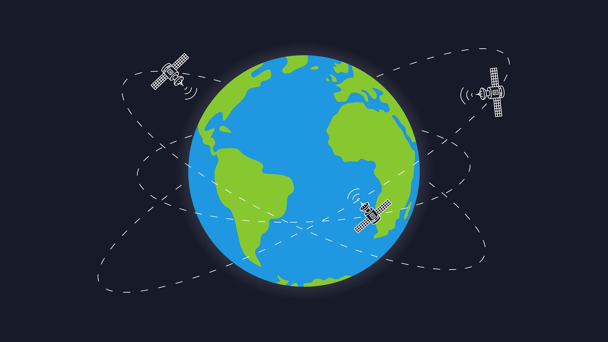

GPS and Divide-and-Conquer
 Divide and Conquer is a problem-solving strategy that involves breaking down a complex problem into smaller, more manageable parts, solving each part individually, and then combining the solutions to solve the original problem. It efficiently uses cache memory without occupying much space because it solves simple sub-problems within the cache memory instead of accessing the slower main memory. It is a widely used algorithmic technique in computer science .
Divide and Conquer is a problem-solving strategy that involves breaking down a complex problem into smaller, more manageable parts, solving each part individually, and then combining the solutions to solve the original problem. It efficiently uses cache memory without occupying much space because it solves simple sub-problems within the cache memory instead of accessing the slower main memory. It is a widely used algorithmic technique in computer science .
GPS is a radio navigation system used on land, sea, and air to determine the exact location, time, and velocity irrespective of weather conditions. GPS is a system made up of three parts: satellites, ground stations, and receivers. GPS has a system of 30+ navigation satellites orbiting the Earth. We know their location precisely because they invariably send out signals. The GPS receiver in your phone receives these signals. Once the receiver calculates its distance from four or more GPS satellites, it can figure out exactly where you are.